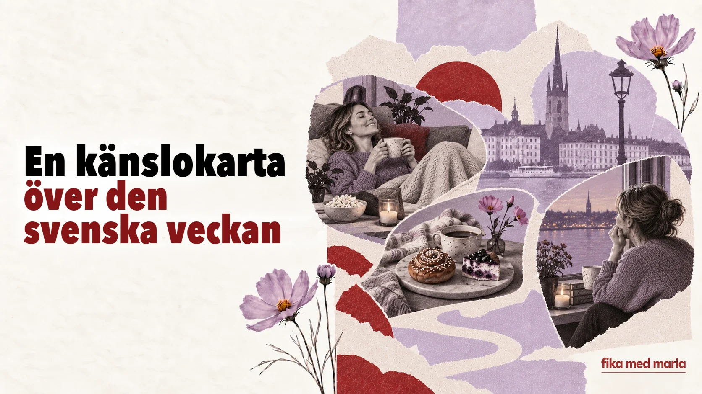

Från fredagsmys till söndagsångest: en känslokarta över den svenska veckan

Kalendern visar dagarna. Språket visar vad vi förväntar oss av dem.
I svenskan finns ord och vanor som skapar veckans känslomässiga manus: en liten onsdag, en mysig fredag, lördagsgodis och söndagsoro. Tillsammans berättar de mer om det svenska vardagslivet än en lista över officiella helgdagar.
Måndag: börja om från början
Måndagen har, som bekant, rykte om sig att vara en tung dag.
Det känns verkligen som måndag.
Ungefär: man märker verkligen att det är måndag i dag.
Om någon frågar Hur är läget? är det helt naturligt att svara:
Jo då, lite trött bara. Det är ju måndag.
Ungefär: det är okej, jag är bara lite trött – så är det ju på måndagar.
Partikeln ju skapar här en gemensam förståelse: vi vet båda att måndagen förklarar allt.
Lillördag: en liten lördag mitt i veckan
Onsdagen kallas ibland lillördag – en liten lördag. De historiska förklaringarna kan variera, men i dagens språkbruk betyder ordet ofta att man mitt i veckan kan göra något trevligare och festligare: träffas, gå ut eller unna sig ett glas vin.
Ska vi gå ut? Det är ju lillördag.
Det är ingen obligatorisk nationell ritual. Snarare en kulturellt igenkännlig benämning som man på skämt kan ta till som ursäkt när en onsdag beter sig som en lördag.
Torsdag: nästan fredag
Torsdagen präglas ofta av förväntan inför helgen. I det traditionella köket förknippas den med ärtsoppa och pannkakor.
I dagens vardagsprat är en annan känsla viktigare:
Snart är det helg.
Ungefär: nu är det inte långt kvar till helgen.
Det är en enkel fras, men den visar hur veckan redan börjar svänga mot vila.
Fredagsmys: mys som plan
Fredagsmys består av fredag och mys. Det är inte bara en ”mysig fredag”, utan ett välkänt sätt att avsluta veckan: hemmet, enkel mat, snacks, film, familjen eller nära och kära.
Vi ska bara vara hemma och ha fredagsmys.
Ungefär: vi stannar helt enkelt hemma och gör fredagskvällen mysig.
Ordet bara förminskar inte planen här. Tvärtom: efter en arbetsvecka kan ”att bara vara hemma” vara precis det man längtar mest efter.
Lördagsgodis: godis enligt schema
Lördagsgodis – godis på lördagen, särskilt kopplat till barns vana att äta sötsaker just på lördagar.
I affären kan man se lösgodis – godis som säljs i lösvikt och som var och en plockar ihop till sin egen blandning. För ett barn kan själva valet vara en ritual för sig, och för en vuxen nostalgi.
Användbara fraser:
Får jag välja lördagsgodis?
Ungefär: är det okej om jag väljer mitt lördagsgodis?
Vilken är din favorit?
Ungefär: vilken sort gillar du bäst?
Söndagsångest: när helgen ännu inte är slut men redan håller på att ta slut
Söndagsångest – oron på söndagen inför en ny arbets- eller skolvecka.
Det kan vara en riktig, stark oro, men också en halvt skämtsam ovilja att ta farväl av helgen.
Jag får alltid lite söndagsångest på kvällen.
Ungefär: på kvällen kommer det alltid en liten släng av den där söndagsoron.
Lägg märke till lite: det mildrar uttalandet och gör det mer talspråkligt.
Varför lära sig sådana ord?
De hör inte till de ”hundra ord man inte kan överleva utan”. Men det är just de som hjälper dig att gå från funktionellt språk till socialt språk.
Känner du till fredagsmys förstår du inte bara ordet. Du förstår varför en kollega glatt säger att det inte finns något inplanerat i helgen. Känner du till söndagsångest kan du hänga med i småpratet på måndagen.
Avsluta meningarna:
- På fredagar brukar jag…
- Mitt perfekta fredagsmys är…
- Jag får söndagsångest när…
- På lördagar vill jag helst…
I materialet från Fika med Maria är grammatik och ordförråd inbyggda i teman som man gärna vill diskutera: vanor, relationer, arbete, kultur och vardagsliv. Material och kurser.
Har alla svenskar fredagsmys?
Nej. Det är en välkänd kulturell vana, inte en obligatorisk regel för varje familj.
Är söndagsångest en medicinsk term?
I vardagsspråket är det ett informellt namn på en känsla av oro eller obehag inför en ny vecka.